Problem statement
Construction of the support structure was abandoned after a building went up next to it, covering the space where the double staircase was meant to be built. By then only the cat ladder had been built.
Scope
What I was asked to deliver
Redesign the staircase to fit the space that was left, and draw the as-built structure: the steel support for the three silo tanks, the +5.99 m access deck, the stair, the caged ladder and the plinth layout.
Solution
How I solved it
- Redesigned the access as a dog-leg stair with a landing that fits beside the new building, keeping the existing caged ladder as a second way down.
- Rotated the column orientation and added landing support columns to carry the new stair (Revs 2–4).
- Extended the gratings so the tanks can still be reached for maintenance.
- Drew the as-built structure: X-braced steel bents on concrete plinths, set out on grids 01–08a × H–K1, under an 18.9 × 7.0 m grating deck at +5.99 m.
3D model
Watch it go together
Build sequence
Drag to orbit · scroll or pinch to zoom · right-drag to pan
Drawings
Plans, elevations & sections
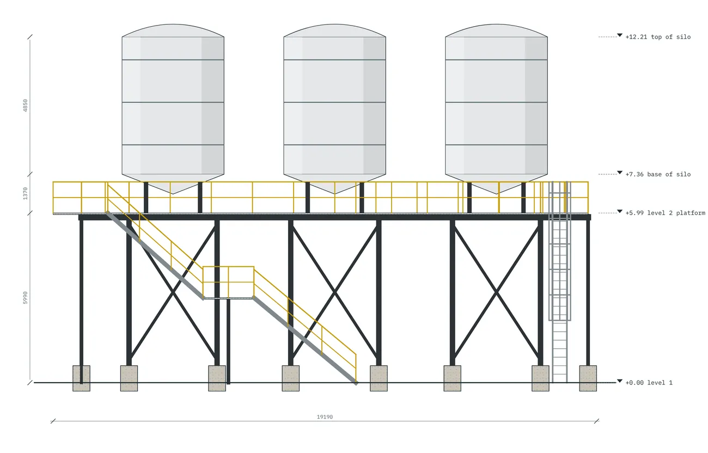
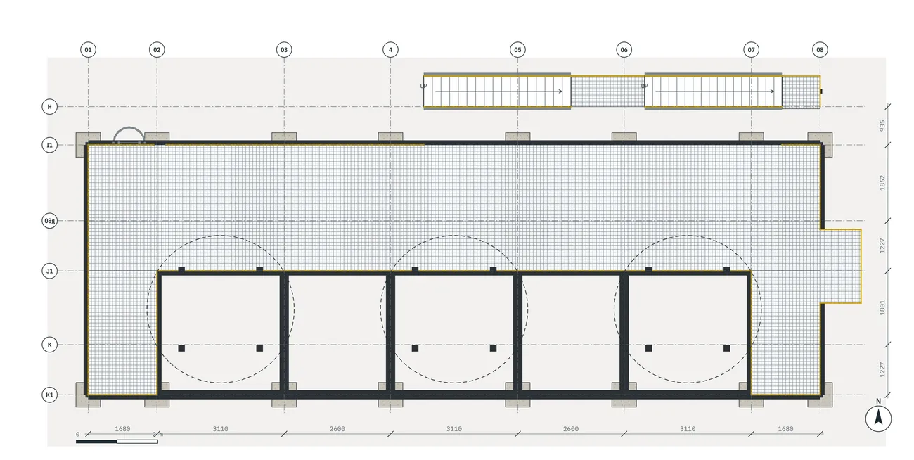
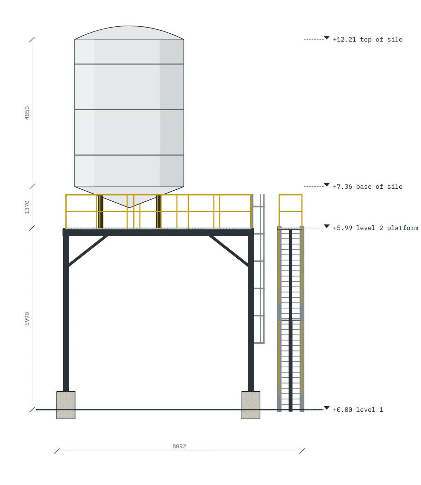
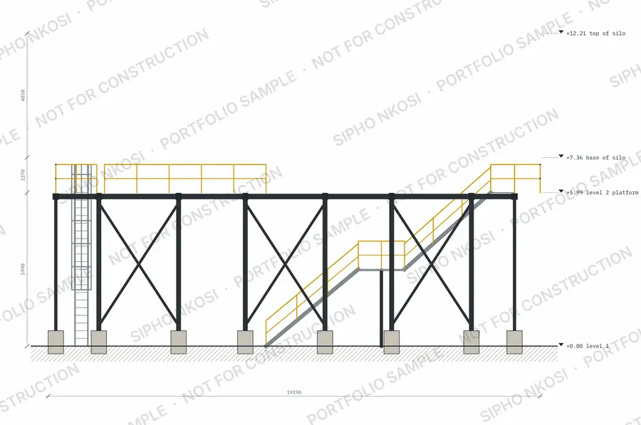
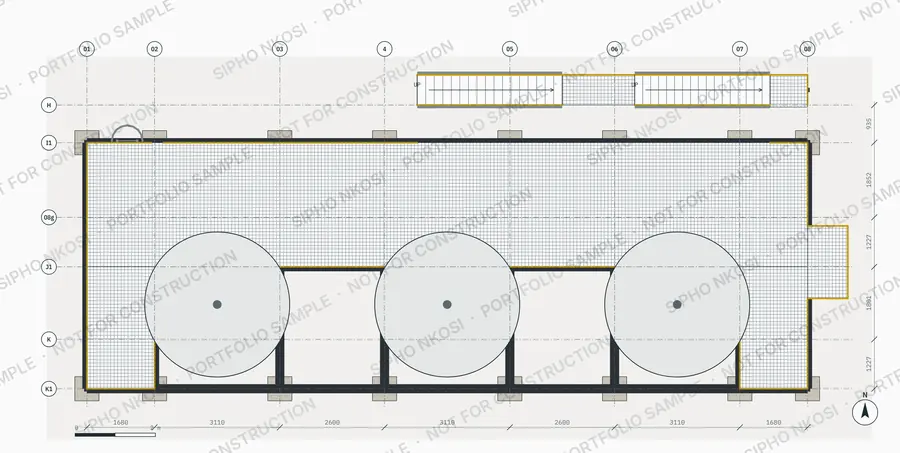
Drawing set as issued
The original fabrication & construction sheets
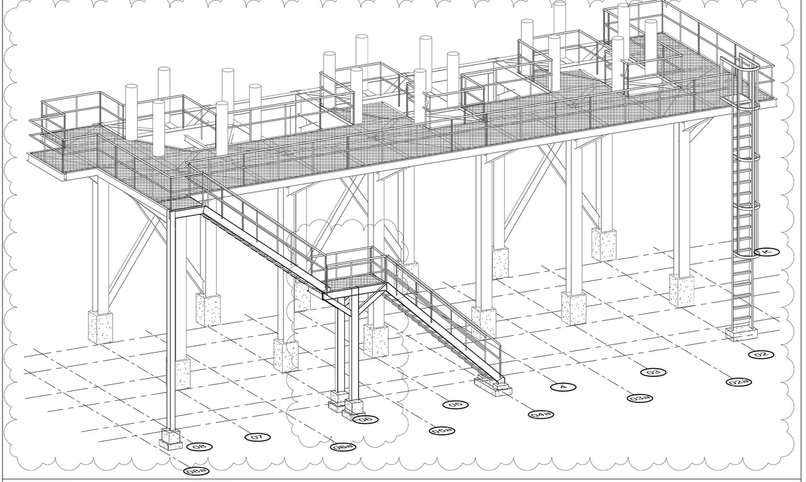
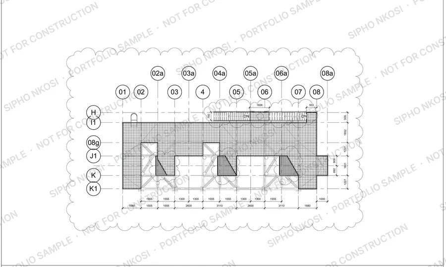
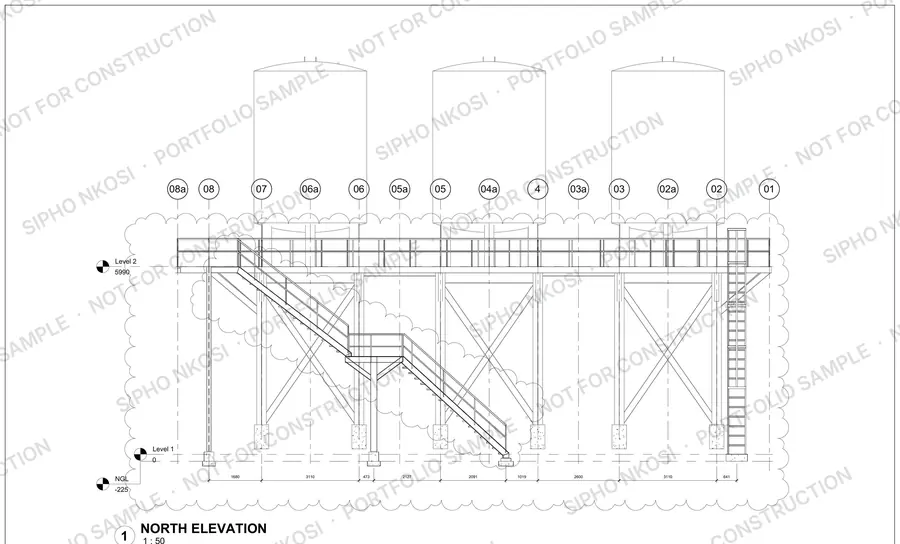
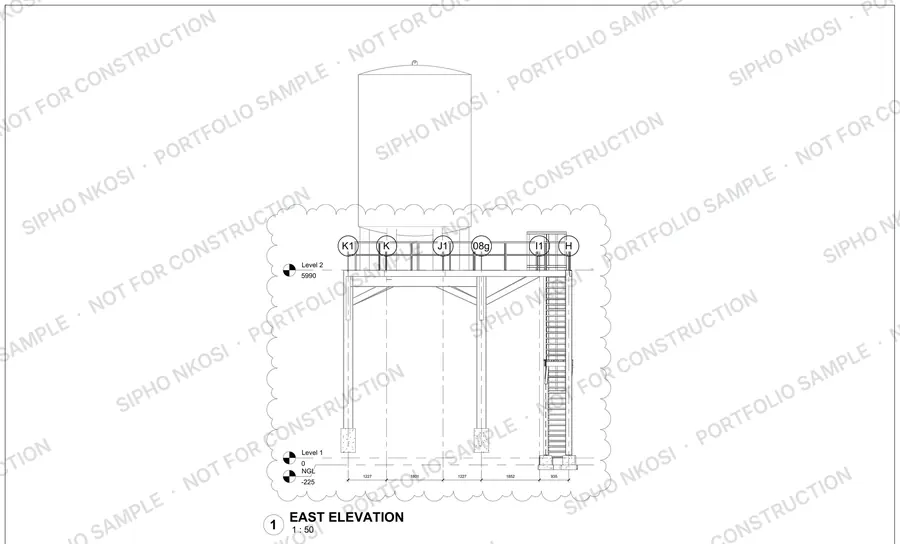
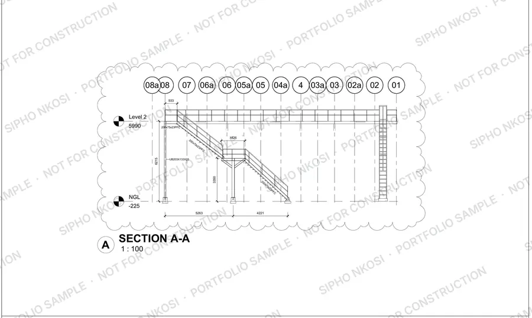
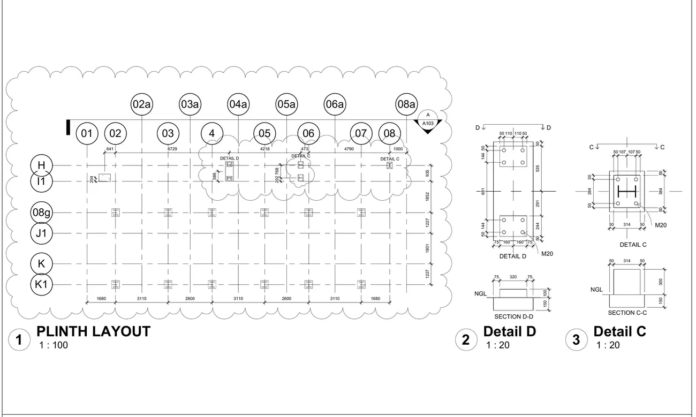